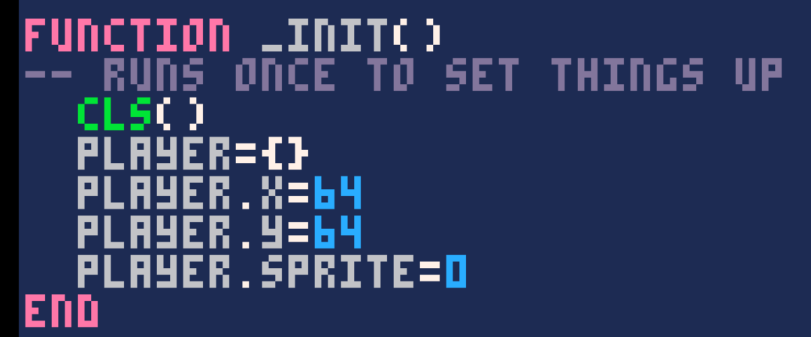
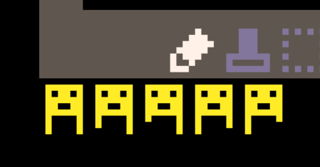

We are going to use a "fantasy game console" called Pico-8, which is available to purchase from https://www.lexaloffle.com/. If you want to work fast, on a simple game, here is one simple page tutorial on Pico-8 to make a space shooter: https://ztiromoritz.github.io/pico-8-shooter/
We'll start off more slowly, with creating a basic sprite, and allow some simple animation.
Fig 1: Simple Sprite - sprite 0
However, every game requires a data representation of the player; this can be as simple as its X and Y coordinates on screen, but will often include other things too. For now we need a representation of which sprite to show. Our game loop will require an _INIT function to create and set up this data, in this case, a table or object, called PLAYER. _INIT is only run once, at the start of the game.
Fig 2: Simple Sprite - data representation in _INIT
Next in our game loop, we need an _UPDATE function, which runs once a tick in game time; for Pico-8 and many older game engines, this is thirty times a second. For more recent game engines, sixty or even 120 ticks per second are possible. Here, we are detecting the arrow keys being pressed, and updating the X and Y values for our player sprite; X+=1 is short hand for adding one to X (equivalent to X=X+1)
Fig 3: Simple Sprite - basic movement in X and Y direction
However, this means that we can walk our player off the screen! Values less than 0 or greater than 127 would have the player partly, or completely off the screen; the X and Y values are usually for the top left corner of the sprite, so we can go down to -8 before the sprite is off screen at the top or the left, and over 127 for bottom and right. So, we must make sure that our character wraps for now. Wrapping means that the player moving off the top, comes on at the bottom, and left and right are linked too. (Clearly, there are other options, such as keeping the player on screen.)
Fig 4: Simple Sprite - wrapping the character on the screen
Finally, we need a _DRAW function, which will also be run so many times a second; in the case of Pico-8 this is also 30 times a second, but screen refresh rates can vary, depending on different engines, and the complexity of what is on screen. You may have heard of "locked at 60 fps", which is guaranteeing that the screen refresh rate is 60Hz, where fps stands for "frames per second". However, games often have to slow down refresh rates, when there is a lot going on. For flicker-free gaming, we need a minimum of 30-60fps, but we can often see variation as worse than a consistent lower refresh rate. Pico-8 works with 30fps, but VR games often need 90-120fps to stop us from feeling sick or nauseous!
Fig 5: Simple Sprite - drawing the sprite on screen
Here, the CLS function clears the screen each frame - CLS stands for CLear Screen - and SPR prints a sprite at X and Y, where (0,0) is the top left of the screen; bottom right is (127,127) BTW (by the way), and SPR is short for SPRite. PLAYER.SPRITE was set in the INIT function to be 0, so the first sprite is what is put on screen. However, it would be nice to change this each frame, so that our player character can walk.
So, we should create a series of sprites that show a walk cycle, by cutting and pasting, and editing the image to show a basic walk animation. Here, sprite 0 is our "stand still" sprite, while the following six sprites show us lifting and dropping our feet, in a cycle. (A little tip: as well as cutting and pasting sprites, we can use 'f' and 'v' to flip sprites in the editor horizontally and vertically, respectively. This will save time. The game can flip sprites during execution too, so we can reuse sprites as well, but more of that later.
Fig 1a: Crude animation - sprites 0 to 7
For this to work, we need a flag to tell the game when we are moving, so we know to keep changing the sprite. Here we have added PLAYER.MOVE to the Player object, which is either TRUE or FALSE.
Fig 1a: Crude animation - move flag
If we detect a button press, then we set this to be TRUE. If there is no button pressed, we set it to FALSE. (Here we only show one of the IF statements.)
Fig 1b: Crude animation - setting the move flag
Now we need to cycle the sprite value between 1 and 7, to make our player walk, and we need to reset to 1 when we go over 7. Also, when we stop, we need to set our 'idle' state, which is sprite 0, or stand still sprite.
Fig 1a: Crude animation - using the move flag to update our sprite images
However, this is very wasteful, as we have had to recreate several of the sprites to allow for smooth animation. We can do better! To do this, we use another table, this time to reference specific sprites, to save us some work. Instead of seven sprites, nearly half of which are duplicates, we can use four instead.
Fig 2a:Improved animation - sprites 0 to 4
Fig 2a:Improved animation - sprites 0 to 4
Fig 2b:Crude animation - table for cycling between sprites 0 to 4